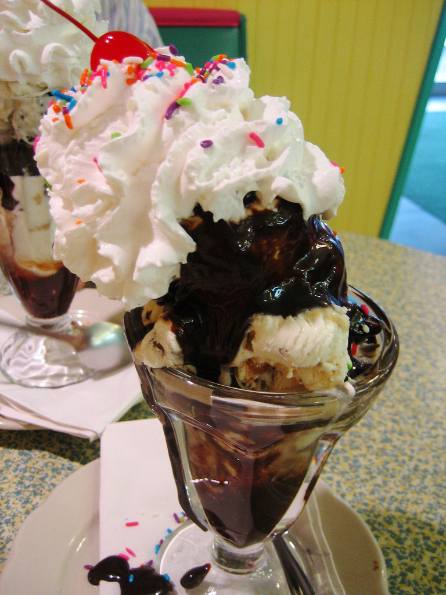

Are Chocolate and Vanilla Part of Big Ice Cream's Flavorist Agenda?

Starbucks has been in the news lately with their "Race Together" campaign that encourages workers to discuss race issues with their customers.I don't know about you, but my mother taught me it's not polite to discuss, race, religion, or politics in public so I'm staying far away from that one.
It did get me thinking though about chocolate sundaes, vanilla syrup and flavorism in ice cream shops.
Every ice cream shop in our local area offers chocolate sundaes with chocolate syrup, but none has a vanilla sundae with vanilla syrup. At first I thought this was because vanilla syrup didn't exist, but it turns out, Vanilla Syrup is a product. It's just that nobody uses it for sundaes.
I wanted to know why so I hit the ice cream parlor's at lunch time to ask the question "How come they don't have vanilla syrup?"
I asked Rhonda a teacher, what she thought, “Excuse me mama, I notice you're having a chocolate sundae. Why don't they have vanilla sundaes?
She answered, "Vanilla sundae? That is sickening and detestable. I do not consume that. It has no flavor. It does not have a taste. Vanilla is the water of dessert. Vanilla syrup is no better than tree sap."
Then I asked Calvin Hanes, a corporate administrative assistant the same question.
He told me, "I would have a vanilla shake. That is great. Furthermore the vanilla frozen yogurt is alright with sprinkles, but Vanilla ice cream with vanilla syrup? No chance. That sounds excessively exhausting."
I guess that answers it. Seems like no one has the taste for the no-taste vanilla. See you off the clock!
Photo by roboppy 
Related posts

Scientists Discover Chocolate and Vanilla are the Only Two Flavors
Children have known for decades that there is something special about the chocolate / vanilla combination. Ever increasing consumption of…

Truck Driver Hit By Sleep Deprived Woman, Body Parts Everywhere
A 53 year old truck driver ran out of gas on the highway. He parked the truck on the shoulder…

Exciting Announcement: Vanilla Ice & MC Hammer Join Forces for an Epic Collaboration!
Get ready to turn back the clock and groove to the beats of the '90s, because two legendary icons are…

Does the Doctor Hate Vanilla? The Answer Will Make Your Bones Rattle
“Ask the Doctor” where readers ask questions of the world renounced general practitioner Dr. Charles V. Fullerton. Dear Doctor Fullerton:…